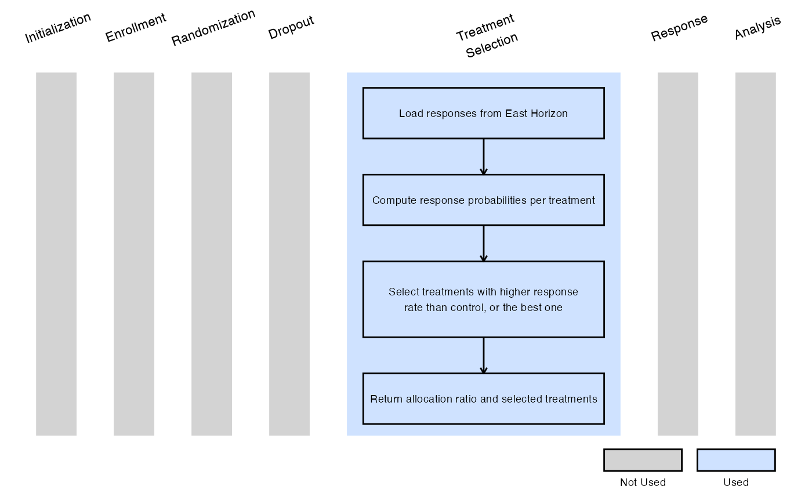
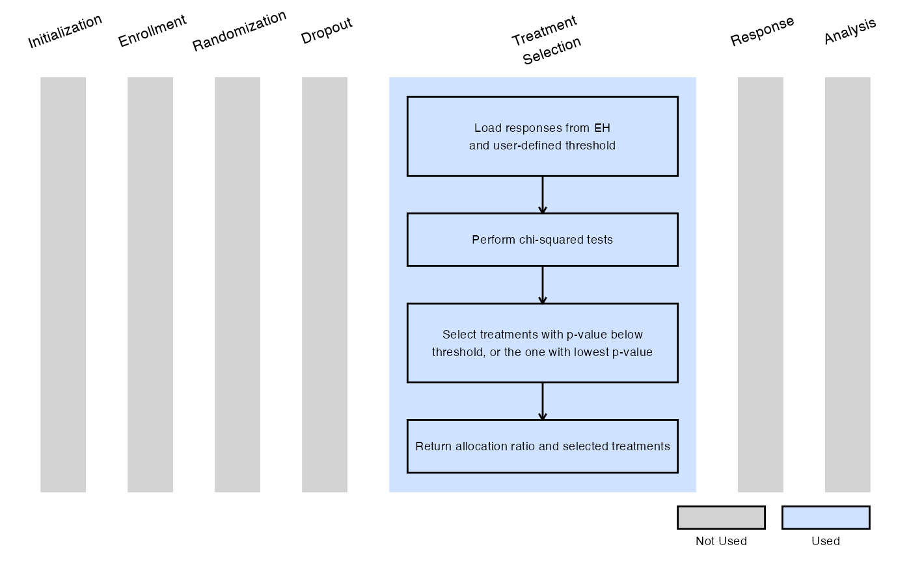
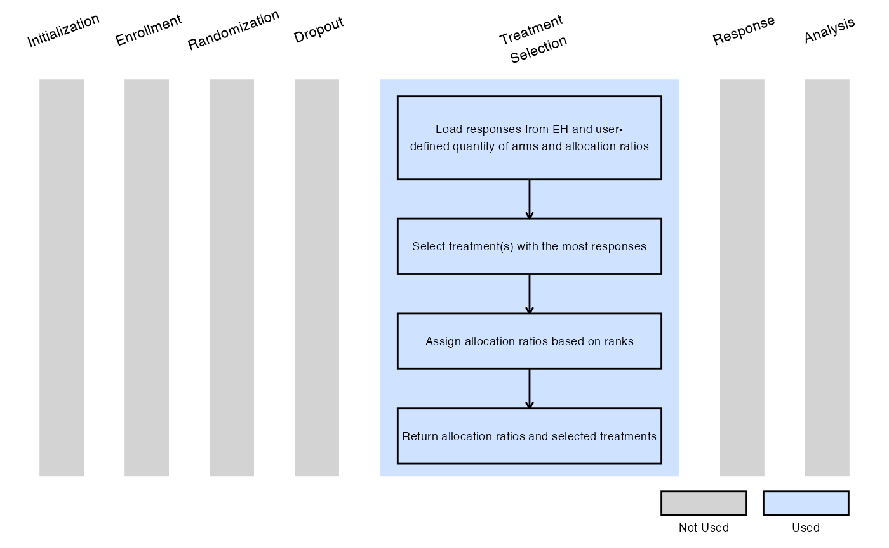
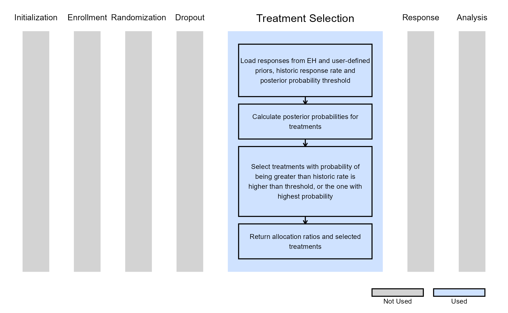

Multiarm, Binary Outcome - Treatment Selection
Sydney Ringold, J. Kyle Wathen
April 25, 2025
TreatmentSelectionDescription.RmdIntroduction
The following examples illustrate how to integrate new treatment selection capabilities into East Horizon or East using R functions in the context of a multi-arm trial. In each example, the trial design includes a standard-of-care control arm and three experimental treatment arms. The design includes one interim analysis (IA) and one final analysis (FA).
At the IA, one or more experimental treatments are selected to continue into stage 2 of the trial. If the trial is not stopped early for efficacy or futility, the control arm and the selected treatments proceed to the final stage. These examples showcase different approaches for selecting treatments to carry forward into stage 2.
Once CyneRgy is installed, you can load this example in R Studio with the following commands:
CyneRgy::RunExample("TreatmentSelection")Running the command above will load the RStudio project in RStudio.
East Workbook: TreatmentSelection.cywx
RStudio Project File: TreatmentSelection.Rproj
In the R directory of this example you will find the following R files:
SelectExpThatAreBetterThanCtrl.R - Contains a function named SelectExpThatAreBetterThanCtrl to demonstrate the R code necessary for Example 1 as described below.
SelectExpWithPValueLessThanSpecified.R - Contains a function named SelectExpWithPValueLessThanSpecified to demonstrate the R code necessary for Example 2 as described below.
SelectSpecifiedNumberOfExpWithHighestResponses.R - Contains a function named SelectSpecifiedNumberOfExpWithHighestResponses to demonstrate the R code necessary for Example 3 as described below.
SelectExpUsingBayesianRule.R - Contains a function named SelectExpUsingBayesianRule to demonstrate the R code necessary for Example 4 as described below.
In addition, if you would like to experiment with these examples and would like code to help you get started we have provided fill-in-the-blank type code files in the FillInTheBlankR directory.
Example 1 - Selection Based on Response Rates Above Control
This example is related to this R file: SelectExpThatAreBetterThanCtrl.R
In this example, at the interim analysis:
- Any experimental treatment with a response rate higher than that of the control arm is selected for stage 2.
- If no experimental treatment exceeds the control response rate, the treatment with the highest estimated probability of response is selected instead.
In stage 2, a 1:1 randomization ratio (experimental:control) will be used.
The figure below illustrates where this example fits within the R integration points of Cytel products, accompanied by a flowchart outlining the general steps performed by the R code.

Example 2 - Selection Based on P-Value Less Than Specified
This example is related to this R file: SelectExpWithPValueLessThanSpecified.R
In this example, at the interim analysis:
- Each experimental treatment is compared to the control arm using a chi-squared test.
- Any treatment with a p-value less than a user-specified threshold (dMaxPValue) is selected for stage 2.
- If no treatment meets this criterion, the experimental arm with the smallest p-value is selected.
In stage 2, a 1:1 randomization ratio (experimental:control) will be used.
Refer to the table below for the definitions of the user-defined parameters used in this example.
| User parameter | Definition |
|---|---|
| dMaxPValue | Threshold used in the chi-squared test to evaluate treatment efficacy (between 0 and 1). Any experimental treatment with a p-value less than this threshold at the interim analysis will be selected to advance to stage 2. |
The figure below illustrates where this example fits within the R integration points of Cytel products, accompanied by a flowchart outlining the general steps performed by the R code.

Example 3 - Select Treatments With Highest Number of Responses
This example is related to this R file: SelectSpecifiedNumberOfExpWithHighestResponses.R
In this example, at the interim analysis:
- A user-specified number of experimental treatments (QtyOfArmsToSelect) with the highest observed number of responses are selected for stage 2.
Following the IA, if two treatment arms are chosen to advance, randomization proceeds according to user-specified allocation ratios 1:Rank1AllocationRatio:Rank2AllocationRatio, where:
- 1 corresponds to the control arm,
- Rank1AllocationRatio corresponds to the treatment with the most responses,
- Rank2AllocationRatio corresponds to the treatment with the second-most responses.
Refer to the table below for the definitions of the user-defined parameters used in this example.
| User parameter | Definition |
|---|---|
| QtyOfArmsToSelect | Number of experimental treatment arms to be selected for stage 2. This number must match the number of user-specified allocation ratios. If not specified, the default is 2. |
| Rank1AllocationRatio | Allocation ratio for the treatment arm with the highest number of responses at interim analysis. Default is 2 if not specified. |
| Rank2AllocationRatio | Allocation ratio for the treatment arm with the second highest number of responses. Default is 1 if not specified. |
| … | Allocation ratios for additional selected treatment arms follow the
same format, incrementing the rank number (e.g.,
Rank3AllocationRatio, Rank4AllocationRatio,
etc.). |
Rank<QtyOfArmsToSelect>AllocationRatio |
Allocation ratio for the treatment arm ranked QtyOfArmsToSelect-th based on the number of responses. |
The figure below illustrates where this example fits within the R integration points of Cytel products, accompanied by a flowchart outlining the general steps performed by the R code.

Example 4 - Selection Based on Bayesian Posterior Probabilities
This example is related to this R file: SelectExpUsingBayesianRule.R
In this example, at the interim analysis:
- A Bayesian model is used to evaluate each experimental treatment.
- We let denote the probability of response for treatment , where .
- The prior distribution is defined as .
- We select any treatment that has at least a user-specified probability (dMinPosteriorProbability) of being greater than the user-specified historical response rate (dHistoricResponseRate). Specifically, if it meets the criterion: .
- If no treatment meets this threshold, we select the treatment with the highest posterior probability of exceeding the historical response rate.
In stage 2, a 2:1 randomization ratio (experimental:control) will be applied for each selected treatment.
Refer to the table below for the definitions of the user-defined parameters used in this example.
| User parameter | Definition |
|---|---|
| dPriorAlpha | Alpha parameter of the Beta prior distribution (between 0 and 1). Default is 0.2 if not specified. |
| dPriorBeta | Beta parameter of the Beta prior distribution (between 0 and 1). Default is 0.8 if not specified. |
| dHistoricResponseRate | Historical response rate used as a reference for comparison (between 0 and 1). Default is 0.2 if not specified. |
| dMinPosteriorProbability | Minimum posterior probability required for an experimental treatment to be considered superior to the historical response rate (between 0 and 1). Default is 0.5 if not specified. |
The figure below illustrates where this example fits within the R integration points of Cytel products, accompanied by a flowchart outlining the general steps performed by the R code.
